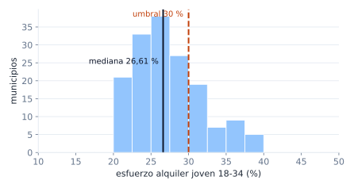
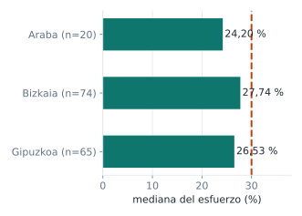
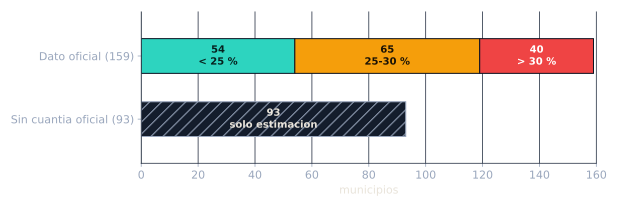
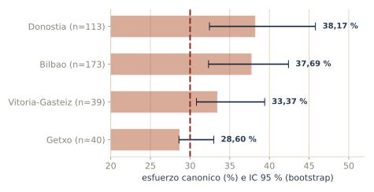
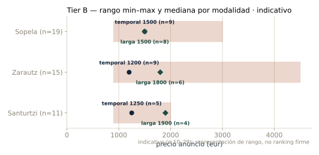
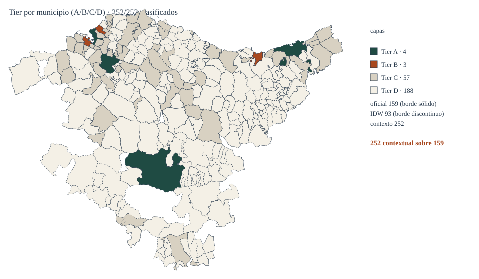
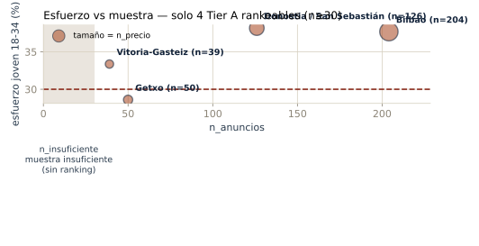
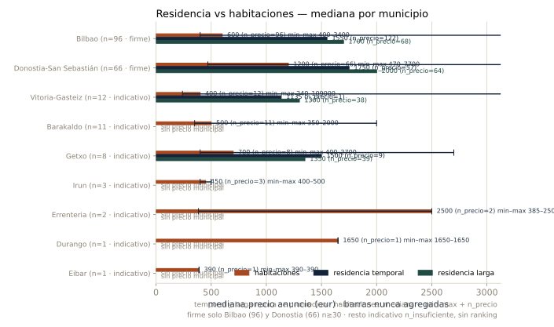
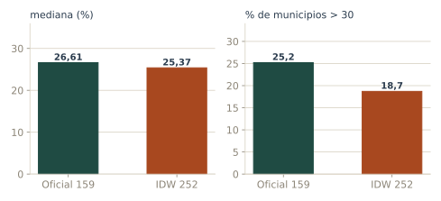

Con el alquiler oficial, la mediana se lleva {{mediana_oficial}} % del salario joven. En {{n30_oficial}} de {{n_oficial}} municipios con dato se supera el 30 %, y en Bilbao y Donostia roza el 38 %.
En 188 municipios no hay anuncios (sin precio observado); en 93 no hay cuantía oficial y solo tenemos una estimación IDW.
esfuerzo = cuantía mediana del alquiler × 12 / renta joven 18-34
Mediana, no media: los alquileres tienen outliers. Umbral: 30 % del salario, el de la literatura de emancipación.


{{mediana_oficial}} % de mediana oficial · {{n30_oficial}} de {{n_oficial}} por encima del 30 % · tensión social {{tension_alta}} alta / {{tension_media}} media / {{tension_baja}} baja

{{tramo_margen}} pueden con margen: menos del 25 %.
{{tramo_justo}} pueden, pero justo: 25-30 %.
{{tramo_no}} no llegan: más del 30 %.
{{n_idw}} solo tienen estimación IDW: no son dato.
169 sin anuncios = sin precio observado, no sin dato de esfuerzo.

Bilbao y Donostia: precio alto y esfuerzo máximo. Vitoria queda por renta, con el m² más barato.
Barakaldo (n=13) queda fuera por muestra, no por resultado.
n = anuncios totales; el esfuerzo se calcula sobre larga estancia.

Con 10–29 anuncios no hay ranking firme: hay un rango.
Sopela ({{tierB_sopela_n}}), Zarautz ({{tierB_zarautz_n}}) y Santurtzi ({{tierB_santurtzi_n}}) se representan en barras de rango, no se ordenan como firmes.

Un coroplético por código INE: 252/252 municipios clasificados.
Capas: oficial 159 (borde sólido) · IDW 93 (borde discontinuo) · contexto 252.

Cada burbuja es un Tier A: Bilbao, Donostia, Getxo y Vitoria-Gasteiz.
La banda sombreada es n_insuficiente: muestra insuficiente, no ranking. Con n < 30 no se ordena nada.

Compartir cuesta, pero no como alquilar entero: cada municipio dibuja tres barras nunca agregadas (temporal, larga y habitaciones).
Solo Bilbao (96) y Donostia (66) sostienen la comparación firme (n≥30). El resto es indicativo (n_insuficiente, Vitoria 12 · Barakaldo 11 · Getxo 8 · Irun 3 · Errenteria 2 · Durango 2 · Eibar 1): rango mostrado, sin ranking ni imputación.

Oficial 159: {{mediana_oficial}} % · {{n30_oficial}} > 30.
IDW 252: {{mediana_global}} % · {{n30_global}} > 30 ({{pct_global}} %).
Decimos el intervalo antes de que lo pregunte el tribunal.
Renta municipal como proxy: falacia ecológica, no es la renta de una persona concreta.
VPO: flujo {{vpo_con_dato}}/{{vpo_total}} (2020-2024, Usansolo sin dato). No es stock: el stock no se infiere.
Embedding en municipios: demografía, empleo,
demanda social (se leen juntos, cambian poco).
Referencing por codigo_ine: anuncios y
promociones (arrays que crecen sin límite).
indicadores_municipio → 252 filas: esfuerzo, tensión, paro.
vpo_terminadas → 251 filas: flujo oficial.
esfuerzo_por_sexo → cálculo en Mongo, no en Python.
# integridad de la materia prima .venv/Scripts/python.exe extract/generar_manifest.py --verify # suite completa .venv/Scripts/python.exe -m pytest tests -q # 9 pipelines + 6 CSV + 12 PNG únicos de 13 emitidos + huella .venv/Scripts/python.exe analysis/run_analisis_mongo.py # gate de la fase de datos .venv/Scripts/python.exe scripts/verificar_fase_datos.py
0:1068..0:1419, lag 0. El consumidor commitea offset + 1 solo tras verificar el SHA.find_one_and_update + ReturnDocument.AFTER, con test.Bilbao ({{bilbao_esf}} %) y Donostia ({{donostia_esf}} %) son las peores plazas para emanciparse con el salario joven.
Getxo ({{getxo_esf}} %) y Vitoria ({{vitoria_esf}} %) quedan cerca del umbral, sin orden firme entre ellos.
En dos tercios de los municipios no hay datos para afirmarlo.
Un ranking municipal fino: 4 robustos no son 252.
Stock histórico de VPO: tenemos flujo {{vpo_con_dato}}/{{vpo_total}}.
Que la renta municipal sea la renta de una persona.
Con más anuncios y stock de VPO ampliaríamos el mapa, no cambiaríamos el signo del titular.